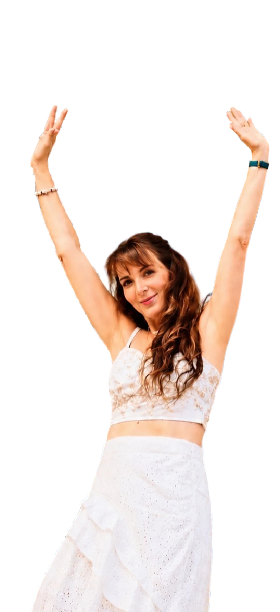
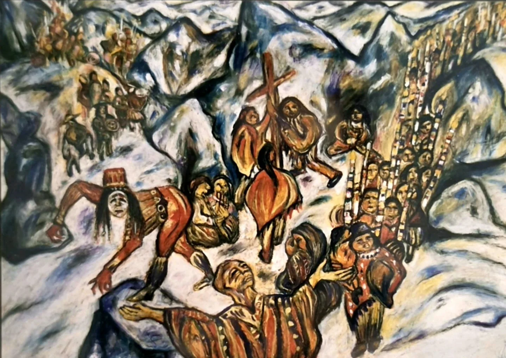
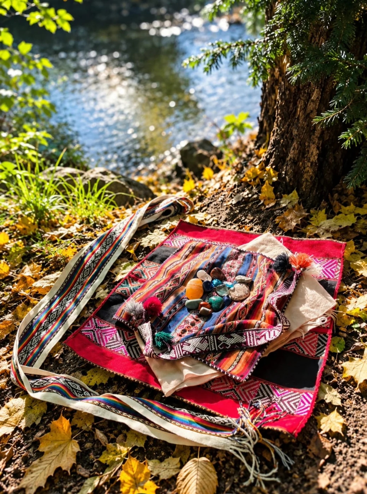
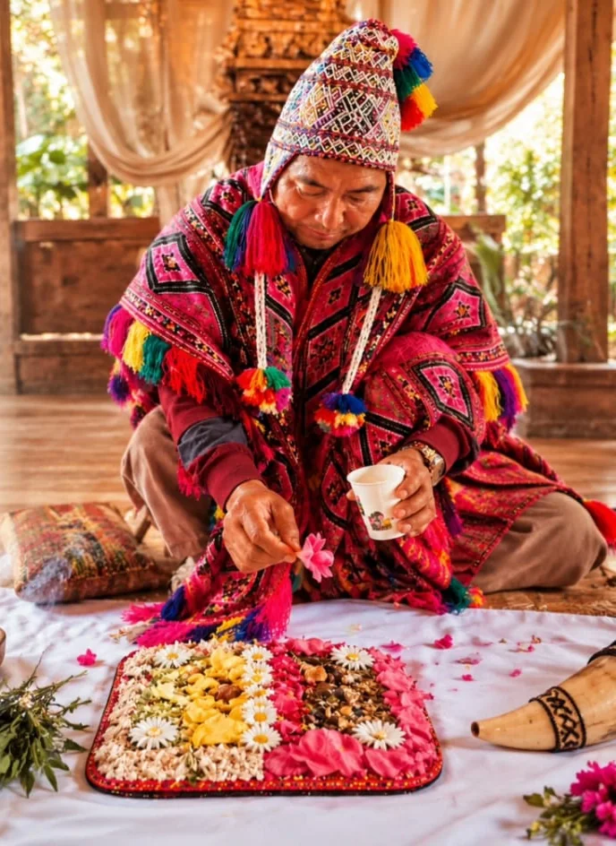

Energetische Bänder lösen
Cord Cutting
Für dich, wenn du dich auf eine schwer greifbare Weise gebunden oder nicht wirklich frei fühlst – ohne genau zu wissen, woran es liegt.
Energiearbeit · Körperwahrnehmung · Kreativer Ausdruck
Beginne die Reise

Spürst du, dass sich etwas in deinem Leben verändern möchte?
Ich begleite dich auf deinem persönlichen Weg der Veränderung mit Energie- und Körperarbeit.
In meiner Arbeit verbinde ich schamanische Energiearbeit mit feiner Körperwahrnehmung und kreativer Integration. Gemeinsam schauen wir auf das, was unter der Oberfläche wirkt und schaffen Raum für Klarheit, Wandlung und neue Lebendigkeit.
Was bedeutet kreative Integration?Katharina
Mehr über mich ganz persönlich
Alles ist Energie.
Alles, was Form annimmt, ist auch Energie.
Mensch. Tier. Pflanze. Wasser. Erde. Berge. Steine.
Energie ist in allem.
Energie ist nichts Fremdes. Sie zeigt sich in deiner Wahrnehmung oft lange bevor du Worte dafür hast.
Energie braucht keinen Beweis, nur deine Bereitschaft, sie wahrzunehmen.
Dann bist du hier richtig.
Das Medizinrad
Im Medizinrad der Anden und des Amazonas verkörpern vier Tierarchetypen Qualitäten, die in jedem Menschen angelegt sind. Kräfte, die dich auf deinem Weg begleiten.
 3Norden
Kolibri · Lebensfreude
3Norden
Kolibri · Lebensfreude
 2Westen
Jaguar · Tiefer schauen
2Westen
Jaguar · Tiefer schauen
 4Osten
Adler · Neu beginnen
4Osten
Adler · Neu beginnen
 1Süden
Schlange · Loslassen
1Süden
Schlange · Loslassen
Alle vier Winde gehören zusammen. Spür nach, welcher dich gerade ruft, und geh den Weg dann im Ganzen.
Die Reise beginnt im Süden und führt über den Westen und den Norden bis in den Osten.
Die Reise beginnen1 Der Wind des Südens
Loslassen
Die Schlange erinnert dich daran: Du darfst dich verändern. Du darfst loslassen, was nicht mehr zu dir gehört.
Alte Geschichten, alte Rollen, alte Häute dürfen abgestreift werden. Sie haben dir auf deinem Weg gedient. Und vielleicht ist jetzt der Moment gekommen, das loszulassen, was dich heute begrenzt, deine Lebensenergie bindet und nicht mehr gebraucht wird.
Die Schlange häutet sich nicht, weil sie es will, sondern weil sie muss, um weiterzuleben.
Erneuerung braucht keinen Kampf. Sie braucht Ehrlichkeit und die Bereitschaft hinzusehen – dorthin, wo du noch festhältst und dich selbst begrenzt.
Die Schlange erzwingt nichts. Und doch kommt der Moment, in dem Stillstand keine Option mehr ist.
Wenn du loslässt, geschieht Wandlung. Still, klar und aus dir selbst heraus.
Die alte Weisheit der indigenen Heilkunst beruht auf einem tiefen Verständnis von Energie, Natur und der Ganzheit des Menschen.
Sie setzt dort an, wo Muster beginnen und ihre Spuren hinterlassen: im Körper, im Gewebe, im Nervensystem, in körperlichen Reaktionsmustern und im Energiefeld – als Abdrücke.
Sie setzt frühzeitig an – mit dem Anliegen, Ungleichgewichte wahrzunehmen und zu begleiten, bevor daraus deutlichere Beschwerden entstehen können.
Gesundheit beginnt vor den Symptomen.
Sie versteht den Menschen als Teil eines größeren Ganzen – verbunden mit sich selbst, mit anderen, mit der Natur und mit Kräften, die über das unmittelbar Wahrnehmbare hinausreichen.
Diese Verbundenheit wird in der Natur unmittelbar erfahrbar.
Natur
In der Verbindung mit der Natur verbindest du dich mit dir selbst.
Jedes Setting findet für dich in einem geschützten Raum statt.
Die energetische Arbeit in der Natur, in direkter Verbindung mit Mutter Erde und dem Himmel, erlebe ich als besonders kraftvoll und wertvoll.
Die Kräfte der Natur können energetische Prozesse auf besondere Weise unterstützen und stärken.
Wenn du dir ein Setting in der Natur wünschst, besprechen wir alle Details persönlich – im Einklang mit den Gegebenheiten der Natur.
Begleitungen im Süden
Energetische Bänder lösen
Für dich, wenn du dich auf eine schwer greifbare Weise gebunden oder nicht wirklich frei fühlst – ohne genau zu wissen, woran es liegt.
Raum zum Durchatmen
Für dich, wenn du dich dauerhaft angespannt, gestresst, erschöpft fühlst.
2 · Weiter mit dem Wind desWestens
2 Der Wind des Westens
Tiefer schauen
Der Jaguar kennt keine Angst vor der Dunkelheit. Er geht hinein.
Dort, wo wir sonst ausweichen, beginnt Wandlung – still, wach und klar.

Schattenarbeit
Vieles von dem, was in uns wirkt, liegt im Verborgenen.
Formt unsere Gedanken, unsere Entscheidungen, unser Leben.
In der Schattenarbeit, wie sie von C. G. Jung beschrieben wurde und deren Parallelen zum Weg der Energiemedizin auch Alberto Villoldo aufzeigt, geht es nicht darum, etwas zu reparieren, sondern darum, zu sehen.
Es geht nicht darum, perfekt zu sein – sondern wahr.
Was wir nach außen hin sagen und zeigen, ist oft nur die Spitze des Eisbergs.

Darunter liegt unsere ganz persönliche Schattenwelt mit Ängsten, alten Wunden und ungelebten Anteilen.
Trauen wir uns, das, was im Schatten liegt, als Teil von uns anzuschauen und anzunehmen?
Kennenlernen

Was im Schatten liegt, möchte gesehen und angenommen werden.
Begleitungen im Westen
Auch genannt: das Dreieck der Entmachtung
Für dich, wenn du erforschen möchtest, welche Rollen du unbewusst einnimmst und wie du aus ihnen herausfinden kannst.
Aus der schamanischen Dschungelmedizin
Für dich, wenn sich etwas in dir schwer, eng oder fremd anfühlt.
Was wir ins Bewusstsein holen, verliert seine Macht.
3 · Weiter mit dem Wind desNordens
3 Der Wind des Nordens
Lebensfreude
Der Kolibri erinnert dich daran, das Schöne im Leben wahrzunehmen und Dankbarkeit zu empfinden.
Er lädt dich ein, dir Leichtigkeit zu erlauben. Und lebensfroh zu sein.

Eine Inspiration für uns alle
Der Kolibri stellt keine Antworten bereit. Aber vielleicht erinnert er dich daran, dir diese Fragen zu stellen.

Vielleicht reicht genau das, um etwas in Bewegung zu bringen.
Begleitung im Norden
Eine schamanische Reise zurück zu dir
Es geht um Rückverbindung. Um Anteile, innere Ressourcen und Qualitäten in dir, die im Laufe deines Lebens in den Hintergrund getreten sein können – und die heute wieder mehr Raum in deinem Leben bekommen dürfen.
4 · Weiter mit dem Wind desOstens
4 Der Wind des Ostens
Neu beginnen
Der Adler steht für Klarheit und Fokus, für den Blick von oben.
Er sieht das Ganze und erkennt das Wesentliche.


Die Qualität des Adlers
Die Qualität des Adlers steht für die Fähigkeit, Zusammenhänge zu erkennen, ohne sich im Detail zu verlieren.
In der Energie des Adlers entsteht Weite, der Blick wird klar, Muster werden sichtbar und Orientierung entsteht.
Gleichzeitig erinnert uns der Adler daran, dass wir mit etwas Größerem verbunden sind – mit einer tieferen Intelligenz, die über den Verstand hinausgeht und uns führt.
Vision
Träume deine Wirklichkeit ins Leben.
Der Adler lädt dich ein, deine Perspektive zu verändern und dich auf das auszurichten, was du wirklich leben möchtest – klar, wach und fokussiert.
Wie der Adler dich inspirieren kann
In der Tradition der Medizinleute der Anden und des Amazonas ist Gleichgewicht kein Zustand, sondern ein fortlaufender Weg. Es geht darum, achtsam mit dir zu bleiben und wahrzunehmen, was dich aus der Balance bringt, bevor es ‚laut‘ wird.
Wenn du nur noch funktionierstWenn du wahrnimmst
Du hast die Wahl. Sie ist ein Geschenk an dein zukünftiges Ich.
Begleitung im Osten
Was wäre möglich, wenn du deinen Blick erweiterst?
Für dich, wenn du merkst, dass du immer wieder denselben vertrauten Wegen folgst und neugierig wirst, was jenseits davon möglich ist.
Meine Begleitungen
Du kommst mit deiner ganz eigenen Geschichte, deinen Erfahrungen und dem, was dich gerade bewegt. Deshalb schauen wir gemeinsam, was du im Moment brauchst und welche Begleitung wirklich zu dir und deinem Thema passt.
Meine Arbeit wurzelt in der indigenen Heilkunst der Anden und des Amazonas.
Sie verbindet sich mit Impulsen aus der Körperarbeit und kreativen Integration – und vor allem mit einem ganzheitlichen, liebevollen Blick auf dich.
Ich sehe dich – mit offenem Herzen und in deiner ganzen Einzigartigkeit.
Du bist mehr als deine Geschichte oder eine Diagnose.
Das Herzstück, Teil jeder Begleitung
1 Süden · Loslassen
2 Westen · Tiefer schauen
3 Norden · Lebensfreude
4 Osten · Neu beginnen
Was dich und mich durch alle vier Winde begleitet, ist meine persönliche Mesa.

Die Mesa
Meine Mesa ist ein persönlicher, geweihter Kraft- und Ritualraum in der Tradition der Q’ero in den Anden und der Medizinleute des Amazonas.
In ihr liegen die Kuyas – Steine der Kraft. Jede trägt eine eigene Qualität und Kraft in sich.
Für deine Begleitung wählst du intuitiv die Kuyas, die dich für deinen persönlichen Prozess rufen.
Die Mesa ist Bestandteil jeder Begleitung. Sie hält den Raum, trägt den Prozess und wirkt auf energetischer Ebene in ihn hinein – still und kraftvoll zugleich.

Körper, Geist, Emotionen und Energie gehören zusammen. Wenn du zu mir kommst, schaue ich nicht nur auf ein Thema, sondern darauf, was dich bewegt, was dich geprägt hat und was sich jetzt zeigen möchte.
Der Körper lügt nicht. Er zeigt uns, was wir im Alltag oft überhören.
Die Passionsblume öffnet sich mit dir – Schicht für Schicht.
Niemand kann diesen Weg für einen anderen Menschen gehen.
Aus der schamanischen Haltung heraus sehe ich mich als Wegbegleiterin auf deiner persönlichen Reise. Ich ermutige dich, ehrlich hinzusehen und anzunehmen, was sich zeigt.
Was bewusst wird, kann seine Macht über uns verlieren. Darin können Wandlung, innere Kraft und Selbstermächtigung entstehen.
Wie die Passionsblume sich Schicht für Schicht öffnet, geschieht Heilung in ihrem eigenen Rhythmus – von innen heraus.
Klar. Achtsam. In deinem Tempo.
Du bringst dein Thema mit. Gemeinsam schauen wir auf das, was sich zeigt. Nichts muss erzwungen werden.
Du bestimmst, wie tief du gehen möchtest.
Zeit für dich. Raum für Veränderung.
Einzel-Setting
130 €
Ein Raum nur für dich, für dein aktuelles Thema.
Empfohlen
Begleitzyklus
390 €
Drei aufeinander abgestimmte Sitzungen, um tiefer zu gehen und Veränderung zu verankern.
Intensivbegleitung
520 €
Vier Sitzungen für intensive Themen und langfristige Integration.
Das Erstgespräch bis zu 30 Minuten ist kostenfrei.
Gut zu wissen
Nein. Meine Arbeit ist eine energetische und körperorientierte Begleitung und ersetzt keine ärztliche oder psychotherapeutische Behandlung. Sie kann aber eine wertvolle Ergänzung auf deinem Weg sein.
Nein. Offenheit genügt. Du nimmst einfach wahr, was sich für dich zeigt.
Bequeme Kleidung, etwas Zeit danach für dich und ein Glas Wasser.
Du musst das nicht im Kopf entscheiden. Oft zeigt sich im ersten gemeinsamen Prozess ganz von selbst, was als Nächstes stimmig sein kann.
Aus meiner Erfahrung und Wahrnehmung heraus gebe ich dir einen Impuls, welche Begleitung dich auf deinem weiteren Weg unterstützen könnte.
Dann spürst du in Ruhe nach, ob sich dieser Weg für dich richtig anfühlt. Die Entscheidung bleibt immer bei dir.
Das ist individuell. Manche Themen brauchen eine Sitzung, andere einen Zyklus. Wir klären das im Erstgespräch.
Sprich mich gern darauf an. Welche Form für dich passt, klären wir gemeinsam im Erstgespräch.
Das ist kein Problem. Bitte sag den Termin spätestens 24 Stunden vorher ab, dann finden wir gemeinsam einen neuen Termin.
30 Minuten kostenloses Erstgespräch
Im kostenlosen Erstgespräch schauen wir gemeinsam, ob und wie ich dich begleiten kann. Unverbindlich und in Ruhe. Schreib mir ein paar Zeilen, ich melde mich zeitnah bei dir.
Mein Anliegen
In der Essenz bedeutet Leben, sich selbst in Wahrheit zu begegnen.
Von ganzem Herzen freue ich mich darauf, dich dabei ein Stück auf deinem Weg begleiten zu dürfen.
Auch das Malen ist für mich Arbeit mit Energie.
Im Mittelpunkt steht der Mensch – mit Körper, Geist und Seele und mit seinem inneren Erleben. Alle Gefühle und Gedanken dürfen sein. Nichts muss beschönigt, zurückgehalten oder ausgeblendet werden.
Wahrnehmungen, innere Bewegungen und Energien finden in meinen Bildern ihren Ausdruck. So bekommt das, was zunächst unsichtbar ist, eine Form.
Komm mit auf einen kleinen Spaziergang durch meine Lebensspuren.Reinigung des Energiefeldes
Der Kernprozess der indigenen Energiemedizin.
Er wirkt auf allen Ebenen:
körperlich · mental · emotional · energetisch
Ich biete ihn dir an, wenn du bereit bist, schwere Energien aus deinem Feld zu lösen.
Man nennt sie Abdrücke im Energiefeld:
alte Geschichten, prägende Erfahrungen, übernommene Muster.
Sie können sich bis in den Körper hinein auswirken und Symptome begünstigen.
Unser Energiefeld ist die Software, die unserer DNA sagt, was sie produzieren soll: Gesundheit oder Krankheit.
Energetische Bänder lösen
Für dich, wenn du dich auf eine schwer greifbare Weise gebunden oder nicht wirklich frei fühlst – ohne genau zu wissen, woran es liegt.
Zu Ex-Partnern, Eltern, Ahnen oder anderen Menschen können energetische Verbindungen bestehen bleiben – auch dann, wenn die Beziehung längst beendet ist oder sich verändert hat.
In der energetischen Arbeit werden diese Verbindungen auch als Bänder oder Schnüre verstanden. Diese Schnüre können deine Energie binden und dich in alten Dynamiken festhalten. Dabei muss dir nicht immer bewusst sein, woher dieses Gefühl von Gebundensein oder innerer Unfreiheit kommt.
In einem begleiteten energetischen Prozess lösen wir diese Verbindungen und setzen mit dem rituellen Schnitt ein klares Zeichen des Loslassens.
Gebundene Energie darf wieder zu dir zurückkehren. So kann neuer Raum entstehen – für dich, deine eigene Kraft und für neue Verbindungen.
Raum zum Durchatmen
Für dich, wenn du dich dauerhaft angespannt, gestresst, erschöpft fühlst.
In bestimmten Situationen reagieren wir mit einem uralten Muster: Kampf, Flucht oder Erstarren. Manchmal bleibt dieses Gefühl bestehen, obwohl die Situation längst vorbei ist.
Die Entkopplung ist ein heilsames Werkzeug aus der Energiearbeit des Amazonas, das dich dabei unterstützen kann, aus diesem Zustand wieder zurückzufinden – in innere Ruhe, Frieden und Entspannung und in das Gefühl, wieder durchatmen zu können.
Dabei kann sich wieder ein Gefühl von Geborgenheit und Sicherheit einstellen und der Körper mehr Entspannung zulassen.
Auch genannt: das Dreieck der Entmachtung
Für dich, wenn du erforschen möchtest, welche Rollen du unbewusst einnimmst und wie du aus ihnen herausfinden kannst.
Alles, was triggert, möchte gesehen werden. Jedes Urteil über andere kann uns etwas über uns selbst zeigen.
Ich öffne dir einen Raum, um deine Rollen mit wertvollen Tools aus der Energiearbeit zu erkennen und in deine eigene Kraft zurückzufinden.
Erfahren. Verstehen. Verändern.
Aus der schamanischen Dschungelmedizin
Für dich, wenn sich etwas in dir schwer, eng oder fremd anfühlt.
Die Extraktion stammt aus der schamanischen Dschungelmedizin.
In der schamanischen Arbeit gehen wir davon aus, dass sich belastende, schwere oder fremde Energien im Energiefeld und im Körper festsetzen können. Manche zeigen sich fest, klar und verdichtet, andere flüssig, beweglich und schwer greifbar.
Flüssige Energien neigen dazu, sich entlang der Wirbelsäule anzuhaften. Durch die Atemtechnik des Feueratems beginnt sich die Energie zu erwärmen und im unteren Bereich der Wirbelsäule zu lösen. Von dort bewegt sie sich entlang der Wirbelsäule nach oben bis zum Übergang zwischen Brust- und Halswirbelsäule.
Über die Meridiane beginnt die gelöste Energie nach außen zu fließen und wird an den Fingerspitzen durch einen Kristall aufgenommen.
In der Extraktion werden diese Energien gezielt wahrgenommen und aus deinem System gelöst.
Der Körper darf loslassen, das Nervensystem beginnt sich zu regulieren. Alte Spannungen können sich lösen. Dein System findet zurück in seine natürliche Ordnung.
Die Extraktion schafft Raum – für dich, für deine eigene Energie und für deine Klarheit.
Im Anschluss wird dein Energiefeld stabilisiert und harmonisiert, damit sich die Veränderung nachhaltig integrieren kann.
Leichtigkeit. Ruhe. Wieder bei dir ankommen.
Eine schamanische Reise zurück zu dir
Es geht um Rückverbindung.
Um Anteile, innere Ressourcen und Qualitäten in dir, die im Laufe deines Lebens in den Hintergrund getreten sein können – und die heute wieder mehr Raum in deinem Leben bekommen dürfen.
Was ist der Ursprung?
Herausfordernde Lebenssituationen oder starke emotionale Belastungen können dazu geführt haben, dass sich Anteile von uns vorübergehend in den Hintergrund zurückgezogen haben – als natürlicher Schutzmechanismus.
Mit deinem Einverständnis gehen wir in einer schamanischen Reise dorthin, wo diese Anteile geblieben sind, um sie zu dir zurückzuholen und wieder zu integrieren.
Nichts ist verloren. Alles ist in dir – und darf wieder sichtbar werden.
Wir holen die Anteile zurück, die dich stärken und heute bereit sind, wieder mehr Raum in deinem Leben einzunehmen – für mehr Lebenskraft, Selbstvertrauen, Kreativität, Freude und Verbindung zu dir selbst.
Du entscheidest, ob du sie wieder annehmen möchtest.
Erinnern. Verbinden. Integrieren. Ganz sein.
Oft entsteht ein Gefühl von:
Ich bin wieder vollständiger.
Was wäre möglich, wenn du deinen Blick erweiterst?
Für dich, wenn du merkst, dass du immer wieder denselben vertrauten Wegen folgst und neugierig wirst, was jenseits davon möglich ist.
Was wäre in deinem Leben möglich, wenn du deine innere Landkarte erweitern würdest?
Mit Mindset und Energiearbeit, kreativer Integration und Körperarbeit wird für dich sichtbar, was dich geprägt hat, was dich heute steuert und welche innere Landkarte (Orientierung) dich bisher geleitet hat.
Alte Glaubenssätze sind wie alte Trampelpfade, die sich in deinem Gehirn festgesetzt haben.
Die gute Nachricht ist: Dein Gehirn ist neuroplastisch und kann sich verändern. Neue Denk- und Handlungswege können entstehen und Schritt für Schritt vertrauter werden.
So erweitert sich deine innere Landkarte – und mit ihr das, was du für dich und dein Leben für möglich hältst.
Hast du den Mut, eine neue Geschichte zu schreiben – eine, die wirklich deine ist?